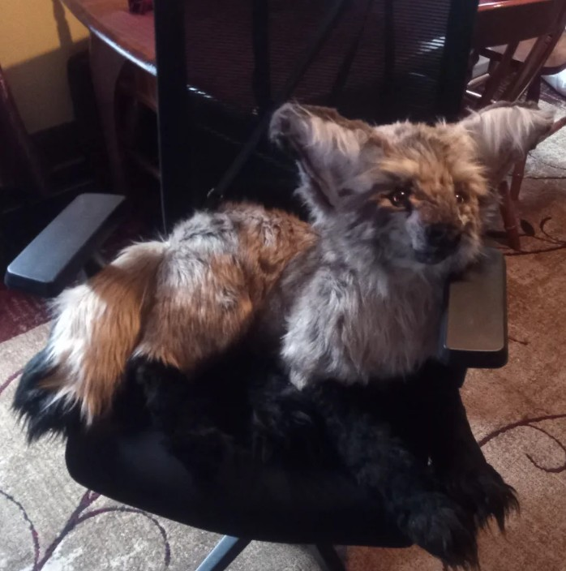
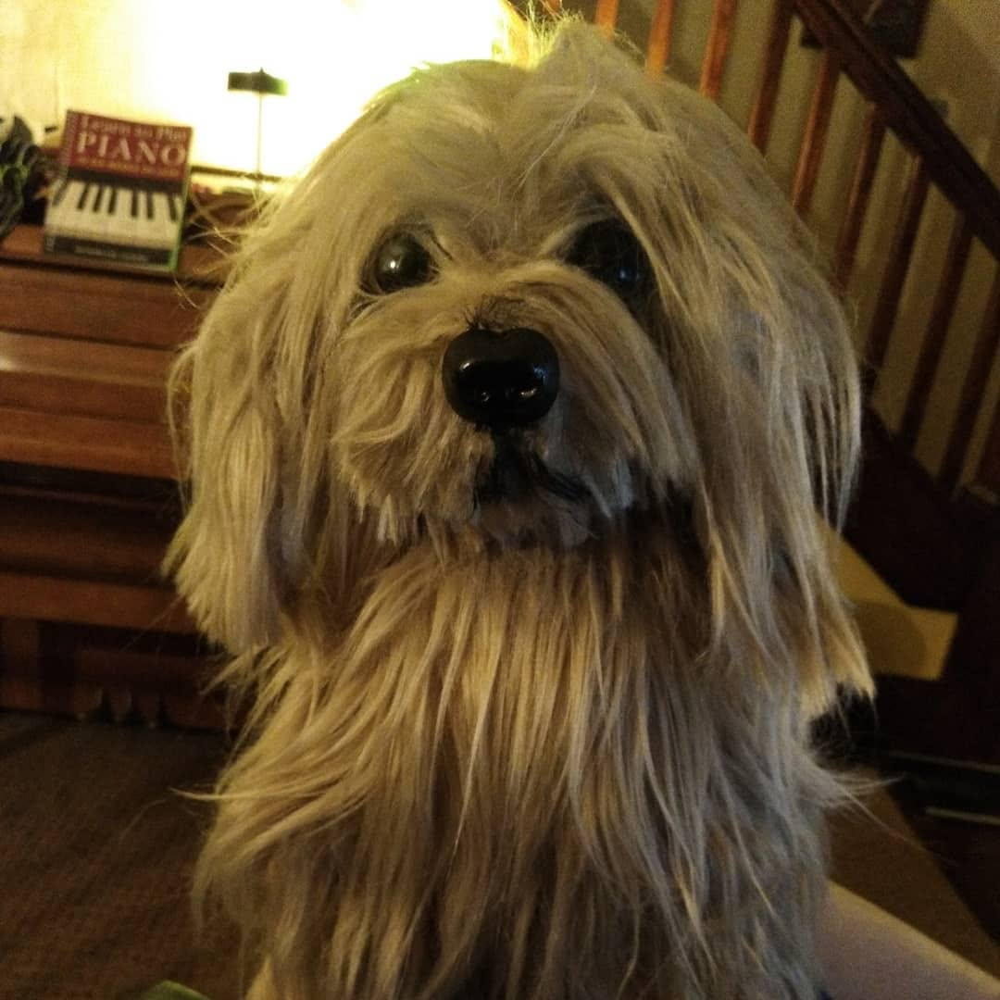
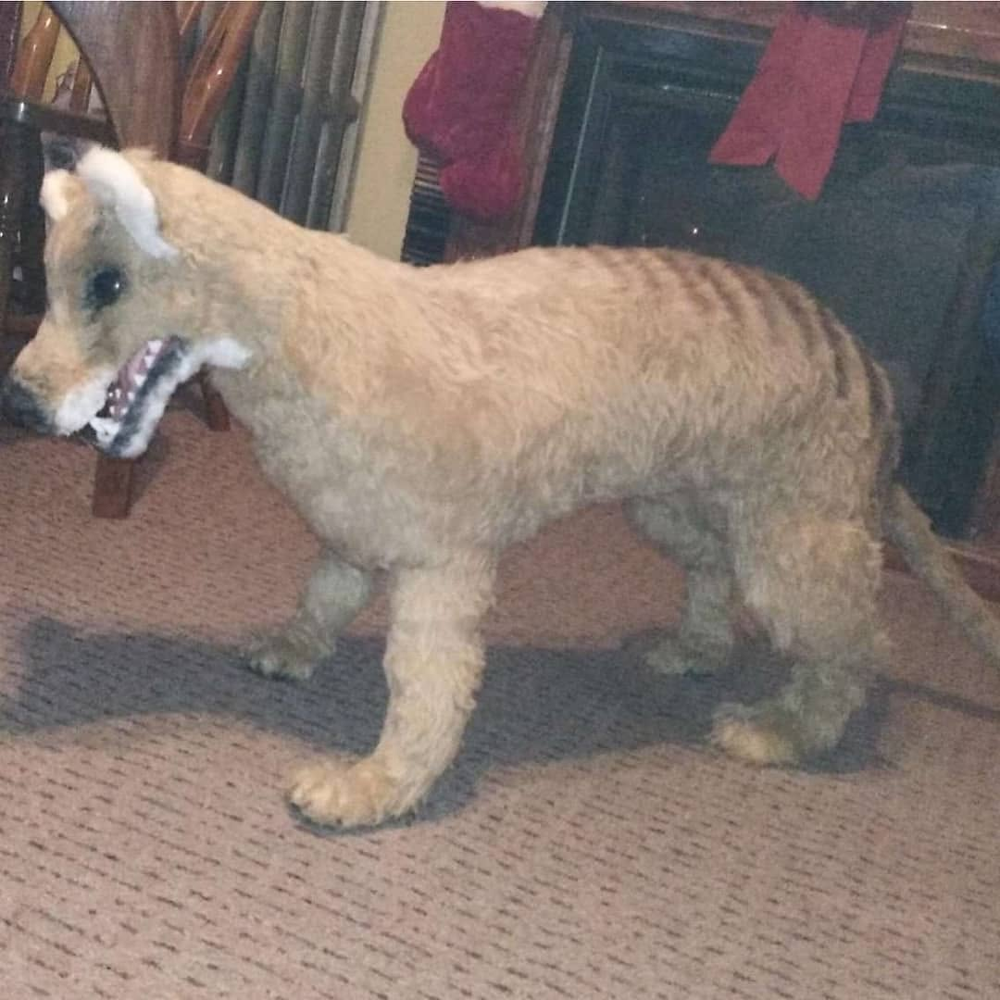

I have enjoyed drawing pictures since I was a little kid. Currently, I make my illustrations with Paint Tool SAI digitally and a HUION Inspiroy H1060P drawing tablet.
After writing Thousands of Pawsteps Away as my capstone project, I had to design a cover for the project. Given how Butterscotch is "in the dark" of where her owner is, I decided to go with a dark, starry sky for the background, giving a slightly hopeful feel, as Butterscotch is front and center for the top of the cover, with a golden gleam to her eyes. In contrast, Josh's fur has an almost metallic, cold sheen. My objective was to show the contrast of both the cat and dog characters with their character designs and even color schemes. Pictured below are illustrations for the Thousands of Pawsteps Away cover as well as a beta cover for a future fox novel.
Beyond digital art, I also make realistic plush animals. The following are custom plushes I made. They are sewn entirely by hand rather than machine, requiring delicate stitching given the thickness of the materials, often times, as well as the delicate precision of slow stitches. Each was sewn by hand with faux fur and filled with polyester fiberfill.



Here is my YouTube channel, where I made short animations digitally as well as "speed painting" videos:
My YouTube Channel